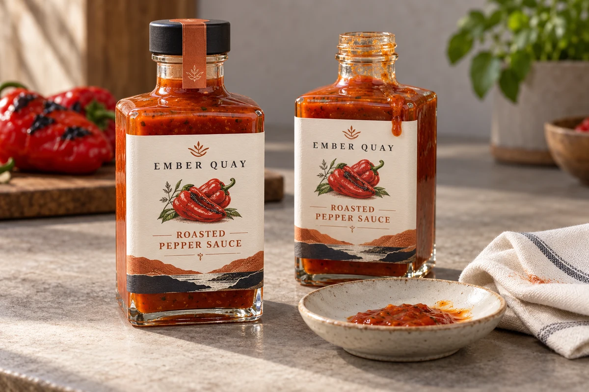
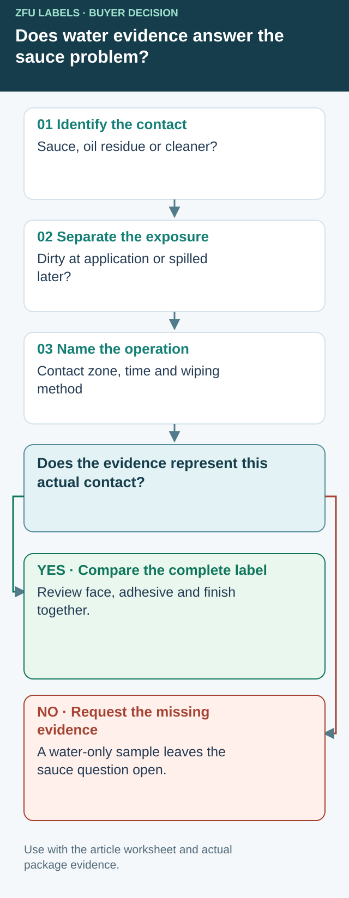

Request sauce-contact evidence separately from water evidence
A supplier sends a photograph of a wet bottle. It may answer a water-exposure question, but it does not establish what happens when your sauce reaches the print, a cut edge or the adhesive interface. Before approving oil-resistant sauce bottle labels, name the actual contact medium and how it reaches the package. Keep initial application on a contaminated surface separate from a spill after the label has been applied.


Start with an identified filled bottle and the actual closure or pourer. Ask the filling or service team where residue appears. Record whether it is sauce, separated oil, condensation or a cleaning product. Do not replace an unknown mixture with a convenient kitchen oil and call the result equivalent. The supplier and the responsible testing party should agree whether a substitute is appropriate and what that substitution leaves untested.
Copy this exposure and cleaning matrix
| Exposure row | Information to enter | Observation to agree |
|---|---|---|
| Before application | Bottle material, surface state and residue control | Whether the proposed application route is represented |
| Sauce on the face | Product reference, contact area and actual use sequence | Appearance, print transfer and readable information |
| Contact at the cut edge | Where liquid reaches the label boundary | Edge appearance and attachment after the agreed sequence |
| Wiping | Cloth or service method and any cleaner actually used | Readability, surface change and any movement |
| Later storage | Chilled or ambient route and relevant handling | Whether later observations differ from the initial sample |
| Decision record | Construction, sample IDs, conditions, owner and open gaps | What is approved and what still needs evidence |
This is a purchasing worksheet, not a standardized chemical-resistance test. Exposure amount, duration, wiping action, sample coverage and acceptance limits need agreement for the actual job. There is no universal rub count or resistance time supplied here. Keep observations tied to identified samples rather than to the attractive photograph of a different bottle.
Use the result to choose the next comparison
Imagine a hypothetical dressing brand whose printed face remains readable but whose sample lifts only at an edge after wiping. That observation would justify a closer review of the complete construction, application history and exposed boundary. It would not prove that the adhesive alone caused the change. Retain an unaffected control where the agreed trial calls for one, and change a defined variable rather than replace the face, adhesive and wiping method together.
If the face and print are the unresolved part, compare proposed protective finishes on the relevant construction. If the bottle is already oily when labeling begins, involve the process owner before asking a top coating to solve an attachment question. Preserve the approved food process; this guide does not authorize new cleaners or changes to filling controls.
There is also a placement tradeoff. Moving critical copy away from the normal drip path can reduce exposure, but it may use space needed for approved product information. Ask the artwork owner to review the revised layout at actual size. Do not make a smaller back panel unreadable merely to protect the front illustration.
The olive-oil guide addresses a pourer and dark-bottle brief; the syrup guide addresses sticky service handling. This matrix adds the missing procurement step: defining which medium and cleaning evidence actually support this sauce-label approval. It establishes no compatibility result or available supplier service.
Short answer
Specify oil-resistant sauce bottle labels with a sauce-contact and cleaning matrix. Separate water evidence, application contamination, spills and wiping. Material names are candidates rather than approval of a complete construction.
Why sauce labels fail
Sauce packaging is harder than many dry food packages because the label may face several stress points at the same time. Oil can move across the bottle surface, refrigeration can add condensation, and curved glass or PET bottles can pull at label edges.
- Oil residue near the label area before application.
- Cold storage or wet handling after filling.
- Large wrap labels on curved or tapered bottles.
- Paper material used where film would be more stable.
- Insufficient proof review for barcode, ingredients and back panel space.
Material options for sauce bottles
| Material | Best use | Important check |
|---|---|---|
| White BOPP | Colorful sauce, dressing and condiment labels. | Candidate opaque construction; request evidence for the actual contact and handling conditions. |
| Clear BOPP | Glass bottles where the product color should show through. | Small text and barcodes may need white ink or a white panel. |
| PET film | Candidate film construction when its actual proposal addresses the agreed duty. | Confirm surface, shape and finish before bulk production. |
| Paper | Dry shelf jars, gift packaging and craft-style labels. | Review oil, refrigeration and handling risk before choosing paper. |
Finish and adhesive are part of the material decision
A film label can still perform poorly if the adhesive is not right for the bottle or if the surface is oily during application. Lamination can protect the printed surface from scuffs and moisture, but it does not replace the need for the right base material and clean application process.
What to send before printing sauce labels
Related guides
For broader material choice, read paper vs film labels. For protective finishes, review the label lamination guide. If labels are lifting, use why bottle labels peel off as a troubleshooting checklist.
FAQ
Should hot sauce labels be waterproof?
Many hot sauce labels benefit from waterproof film because bottles may face refrigeration, condensation and wet handling. The exact choice depends on the bottle and application conditions.
Can sauce labels use matte finish?
Yes. Matte film labels can work well for premium sauce brands, but dark matte labels should be reviewed for scuff visibility and handling.
Do sauce labels need front and back labels?
Not always. Some brands use a wraparound label, while others use separate front and back labels to keep brand design and required product information easier to read.
Continue with Olive Oil Bottle Labels: Plan for Drips, Glass and Legibility for a focused purchase checklist.
Continue with Syrup Bottle Labels: Test the Pour-Down Zone for a focused purchase checklist.
Send the unresolved specification question
Include actual bottle/pourer photos, sauce or residue identity, wiping method, label size and quantities; mark the contact condition whose evidence is missing.
Prepare a label specification inquiry. The contact form opens an email draft; review it and use the listed email or WhatsApp route for attachments. Available construction, sample scope, pricing and timing require confirmation for the actual job.